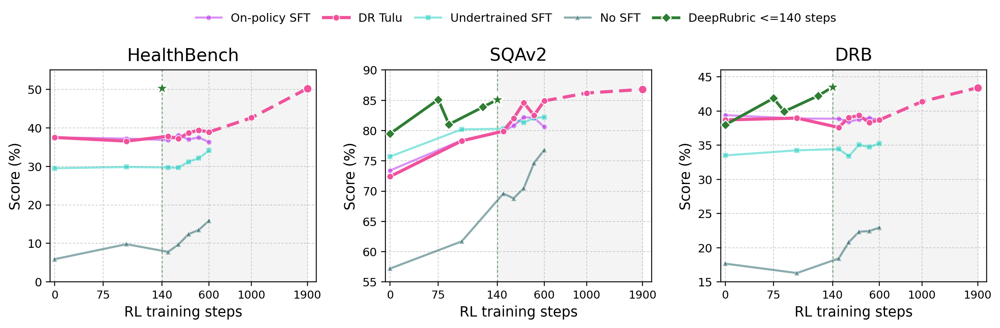

DeepRubric builds query-rubric supervision from retrieved evidence before reinforcement learning. Instead of starting from a user query and asking a model to invent a rubric, DeepRubric first constructs evidence trees from local Wikipedia and OpenScholar corpora, then synthesizes aligned research queries and grounded factual/logical rubric criteria from selected evidence leaves.
The release exposes the full reproduction loop: deploy retrievers, construct evidence trees, verify KEEP/REVISE/DROP samples, convert verified data to verl-tool parquet format, and start GRPO training for a tool-using deep research agent.
The same retriever endpoints are used in data construction and training. This keeps the reward signal, tool observations, and generated tasks aligned with the evidence available to the final agent.
DeepRubric verifies synthesized examples with a separate audit step. Samples are either kept, revised with evidence-grounded criteria, or dropped before conversion into training data.
| Model | SQAv2 | ResearchQA | DRB | Avg. | RL compute |
|---|---|---|---|---|---|
| Qwen3-8B + Search | 57.2 | 46.3 | 18.2 | 40.6 | 0h |
| DR Tulu-8B (1900-step) | 86.8 | 74.3 | 43.4 | 68.2 | ~9700h |
| DeepRubric-8B (140-step) | 86.0 | 75.2 | 43.6 | 68.3 | ~750h |

The code release includes wrappers for retriever deployment, data construction, data conversion, and verl-tool training. Large corpora, indexes, generated datasets, model checkpoints, logs, and private service configs are intentionally excluded.
START_RETRIEVERS=1 bash scripts/run_pipeline.sh@misc{deeprubric2026,
title = {DeepRubric: Evidence-Tree Rubric Supervision for Efficient Reinforcement Learning of Deep Research Agents},
author = {Zhu, Minghang and Wei, Chuyang and Xu, Junhao and Cheng, Yilin and Chen, Zhumin and He, Jiyan},
year = {2026}
}